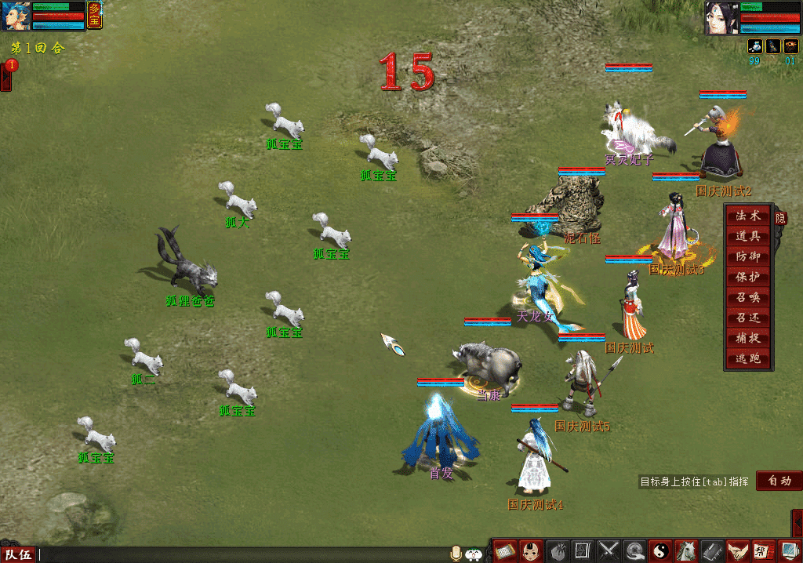
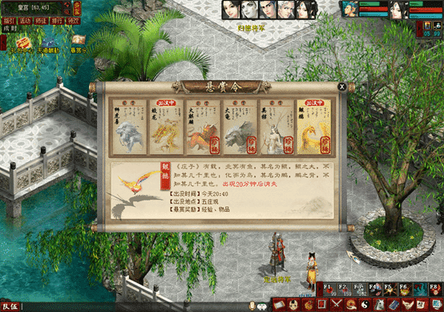
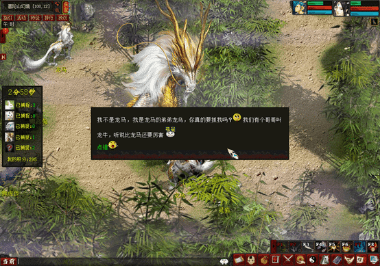

玩法介绍：自建朝以来，我大唐师武臣力，克底有功，此皆勤于训练之故也。唐皇为弘扬国威，举国狩猎，逐鹿中原，扬我国威，壮我体魄！
活动时间：7月28日00点-7月29日24点
参与条件：≥0转50级且3人以上组队
1、3-5人组队到大唐边境、大唐境内、长寿村外、长安东、五指山狩猎，点击地图上的猎物进入战斗，共15次。
2、共有五大狩猎区，每个区域的猎物种类有所不同，在每个狩猎区击败3次猎物后，可领取该狩猎区的特殊奖励。
玩法介绍：大唐素来民风彪悍，加之太宗青年时的戎马生涯，更是对狩猎乐此不疲，周围的几大将士都是一比一的高手，恭候大家前去挑战。
活动时间：7月28日00点-7月29日24点
参与条件：≥0转50级且5人组队
1、5人组队，前往皇宫挑战五位将军，与将军以及他们捕获的猛兽一较高下，每场战斗难度依次提高。
2、与平时BOSS挑战稍有不同：每场战斗前，每个队员需要根据提示为将军选择1只猛兽，选择的猛兽将作为将军的前排助手，合理的选择有助于通过高难度战斗。

玩法介绍：大唐珍奇异兽繁多，每天特定时段，留意异兽图信息，大唐某一地点出现了珍禽异兽，玩家可组队前往观看并挑战。
活动时间：7月28日00点-7月29日24点
参与条件：≥0转50级且3人以上组队
1、打开任务道具中的异兽图，每天分为0：30、10：30、14：30、16：30、20：30、22：30六个场次，每种异兽出现的时间有所不同。
2、每次普通异兽出现10分钟后将有珍稀异兽出没，珍稀异兽只在少数地点刷出，找到后点击进入挑战。
玩法介绍：于观看异兽之际发现一迷雾森林，传言大量珍禽携宝物于迷雾中出现，随迷雾散去而消失。望有志之士能前往探秘，瓜必书会在入口接应你。
活动时间：7月28日00点-7月29日24点
参与条件：≥0转50级且3人以上组队
活动NPC：瓜必书（洛阳93，169）
1、通过洛阳（93，169）的NPC瓜必书入场，每局游戏5分钟，限时内捕捉猎物可获得积分和经验，每天可以进行2局。
2、体型大的猎物积分高经验多，但直接捕捉成功率低。捕捉蟾宫兔等猎物则可得捕捉工具，对特定猎物使用100%捕捉。
3、共有3种隐藏猎物，捕捉后将获得神秘效果，有助于获得高分。
4、每场结束后如达到200分还将获得物品奖励，分数高时更容易获得高级物品，积分将进行排行，前20名在周末活动结束后获得限时称谓。
